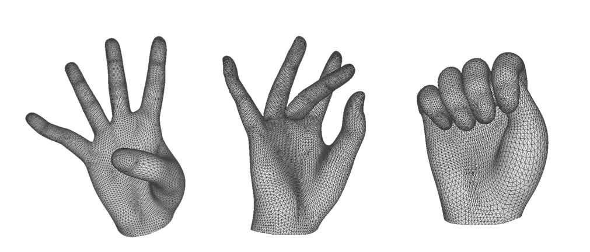
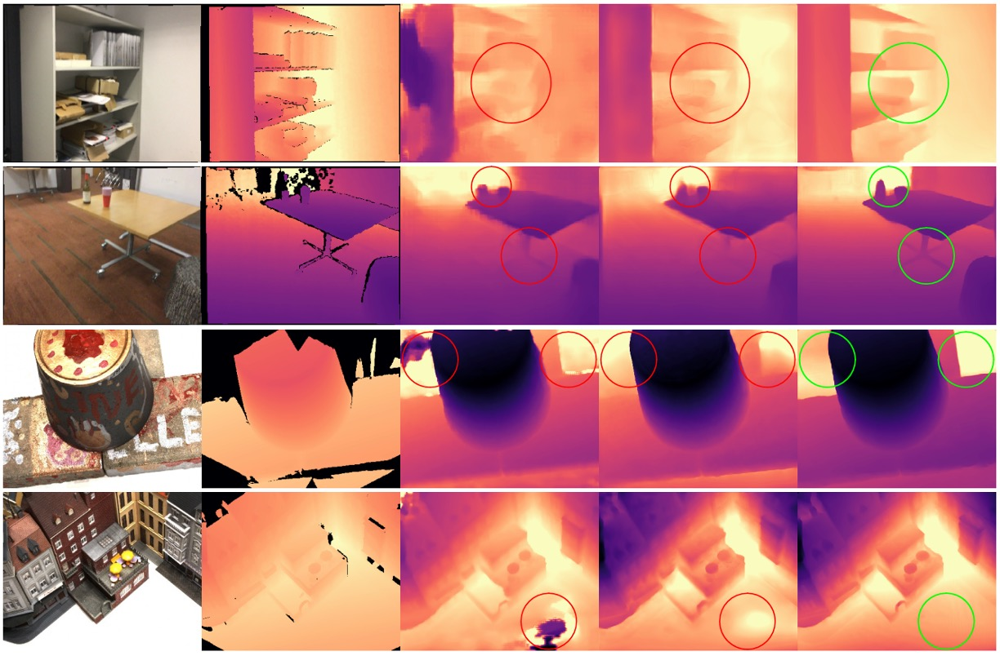
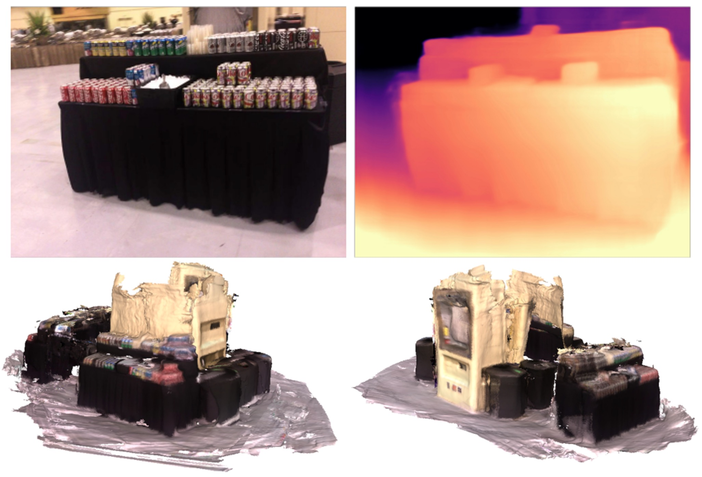
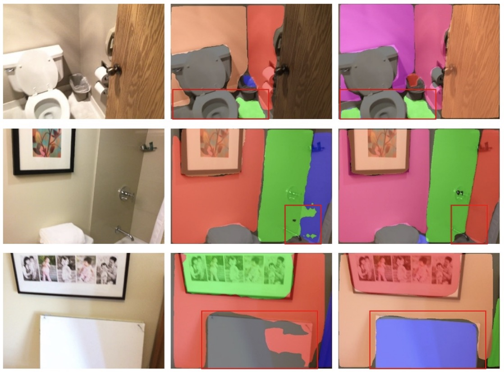
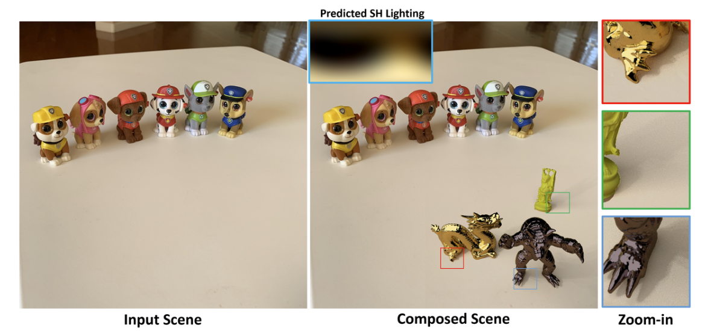
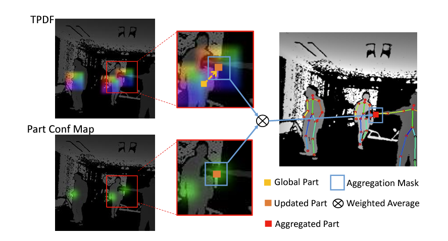
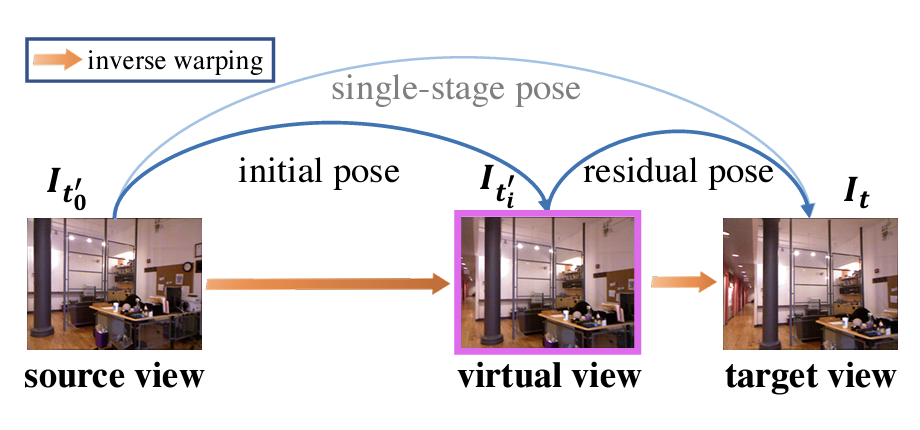
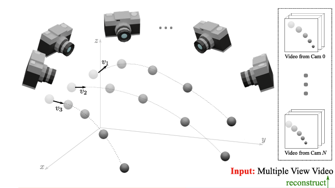

|
OPPO US Research Center XR Team We are a multi-national and cross-functional team that developed multiple XR devices. Since 2019, OPPO has developed OPPO AR Glass (AIO prototype), OPPO AR Glass 2021 (dev-kit, phone-tethered), OPPO Air Glass (a product in the China market, smart monocle), OPPO Air Glass 2 (prototype, binocular display, smart glass), and OPPO MR Glass Developer Edition. |

|
ResearchOur team focus on XR related projects, and are also interested in 3D Computer Vision and Graphics. |

|
NeuRBF: A Neural Fields Representation with Adaptive Radial Basis Functions.
Zhang Chen, Zhong Li, Liangchen Song, Lele Chen, Jingyi Yu, Junsong Yuan, Yi Xu. IEEE International Conference on Computer Vision(ICCV), 2023 (Oral Presentation) project page / code / arXiv |

|
NeRFPlayer: A Streamable Dynamic Scene Representation with Decomposed Neural Radiance Fields.
Liangchen Song, Anpei Chen, Zhong Li, Zhang Chen, Lele Chen, Junsong Yuan, Yi Xu, Andreas Geiger. IEEE Conference on Virtual Reality and 3D User Interface(IEEE VR) , 2023 Special Issue on IEEE Transactions on Visualization & Computer Graphics(TVCG) , 2023 project page / arXiv |

|
OpenIllumination: A Multi-Illumination Dataset for Inverse Rendering Evaluation on Real Objects
Isabella Liu, Linghao Chen, Ziyang Fu, Liwen Wu, Haian Jin, Zhong Li, Chin Ming Ryan Wong, Yi Xu, Ravi Ramamoorthi, Zexiang Xu, Hao Su. To appear at Neural Information Processing Systems (NeurIPS) , 2023 , Datasets and Benchmarks track project page / code / arXiv |

|
3D-aware Facial Landmark Detection via Multiview Consistent Training on Synthetic Data.
Libing Zeng, Lele Chen, Wentao Bao, Zhong Li, Yi Xu, Junsong Yuan, Nima Kalantari. IEEE Conference on Computer Vision and Pattern Recognition (CVPR), 2023 project page / code(TBA) / arXiv |
|  |
High Fidelity 3D Hand Shape Reconstruction via Scalable Graph Frequency Decomposition
Tianyu Luan, Yuanhao Zhai, Jingjing Meng, Zhong Li, Zhang Chen, Yi Xu, Junsong Yuan. IEEE Conference on Computer Vision and Pattern Recognition (CVPR), 2023 arXiv |
|  |
RIAV-MVS: Recurrent-Indexing an Asymmetric Volume for Multi-View Stereo
Changjiang Cai, Pan Ji, Qingan Yan, Yi Xu. IEEE Conference on Computer Vision and Pattern Recognition (CVPR), 2023 project page / video / arXiv |
|  |
GeoRefine: Self-Supervised Online Depth Refinement for Accurate Dense Mapping
Pan Ji, Qingan Yan, Yuxin Ma, Yi Xu. European Conference on Computer Vision (ECCV), 2022 arXiv / Supplemental Material |
|  |
PlaneMVS: 3D Plane Reconstruction from Multi-View Stereo
Jiachen Liu, Pan Ji, Nitin Bansal, Changjiang Cai, Qingan Yan, Xiaolei Huang, Yi Xu. IEEE Conference on Computer Vision and Pattern Recognition (CVPR), 2022 arXiv |

|
NeuLF: Efficient Novel View Synthesis with Neural 4D Light Field.
Zhong Li, Liangchen Song, Celong Liu, Junsong Yuan, Yi Xu. Eurographics Symposium on Rendering(EGSR), 2022 project page / video / arXiv |
|  |
Real-Time Lighting Estimation for Augmented Reality via Differentiable Screen-Space Rendering.
Celong Liu, Lingyu Wang, Zhong Li, Shuxue Quan, Yi Xu. IEEE Transactions on Visualization & Computer Graphics(TVCG), 2022 arXiv |
|  |
PoP-Net: Pose over Parts Network for Multi-Person 3D Pose Estimation from a Depth Image.
Yuliang Guo, Zhong Li, Zekun Li, Xiangyu Du, Shuxue Quan, Yi Xu. IEEE Winter Conference on Computer Vision(WACV), 2022 arXiv / dataset |
|  |
MonoIndoor: Towards Good Practice of Self-Supervised Monocular Depth Estimation for Indoor Environments.
Pan Ji, Runze Li, Bir Bhanu, Yi Xu. IEEE International Conference on Computer Vision(ICCV), 2021 arXiv |
|  |
Learning Kinematic Formulas from Multiple View Videos.
Liangchen Song, Sheng Liu, Celong Liu, Zhong Li, Yuqi Ding, Yi Xu, Junsong Yuan. ACM International Conf. on Multimedia(ACM MM), 2021 arXiv |
|
Design and source code from Jon Barron
|